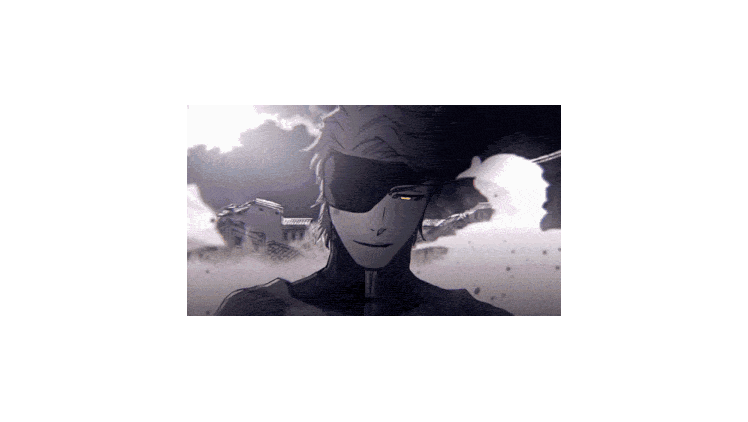

Ryu Hayabusa.

Let's not lie to ourselves, shall we? Hayabusa is one of the toughest characters out there. It's a shame games aren't how they used to be, but this character will always stay on my mind.
Let's not lie to ourselves, shall we? Hayabusa is one of the toughest characters out there. It's a shame games aren't how they used to be, but this character will always stay on my mind.

If you've never heard of Revenant, what are you doing? He has one of the coolest voices out there.

His sacrifice brought me to tears. Though he never spoke, he helped everyone without exception.

He had nothing at first and became the strongest of all. But at what cost? He lost everyone he once loved.

Dude's trying his best not to be like his dad. But he realizes he can't be the typical friendly superhero; he needs to make tough choices that do not please him.

Such a complex character. A lonely kid who tries to do good out there... but is that enough to forget the fact that, in the end, he's alone?

Walter has always been this way: an arrogant man filled with regret. He just needed a reason to 'awaken,' and he found it. His greatest excuse of all time: doing it for his "family."

A child forced to grow up too fast to save Hyrule, only to be forgotten by history. The true tragedy of the Hero of Time.

The kid developed such hatred because he felt betrayed and replaced after his tragic death. His return as Red Hood isn't just about revenge; it's the heartbreaking cry of an abandoned son demanding answers from a father who let him die.

A man who blindly trusted the wrong person, and it cost him his life. In the end, he tried to be a better man and save those he cared about, but it was too late... sadly, too late.

Falsely accused just for standing up for what was right, he turned society's injustice into his greatest strength. A true rebel who showed that breaking the mold is sometimes the only way to save others.

He carried the heavy weight of death just to give everyone a tomorrow. A tragic reminder that time is running out and the real value of life lies in the bonds you make before the end.

A mastermind who stood alone at the top, searching for someone to rival his power, only to realize the true loneliness of absolute strength.